Praktikum 10: Blender Materials, UV & Texturing
Tampilan & Mode Shading
Pilih mode visualisasi untuk menganalisis tekstur PBR material, topologi UV unwrapping, atau arah vektor normal.
PBR Texture Maps & Color Spaces
Base Color (Albedo):
sRGB • 4096 × 4096
Roughness Map:
Non-Color • 4096 × 4096
Metallic Map:
Non-Color • 4096 × 4096
Normal Map (Tangent):
Non-Color • Normal Map Node
Emission Color & Mask:
sRGB (Color) • Non-Color (Mask)
Ambient Occlusion (AO):
Non-Color • glTF Standard
Dokumentasi Workflow & Evaluasi (12 Bukti Proses)
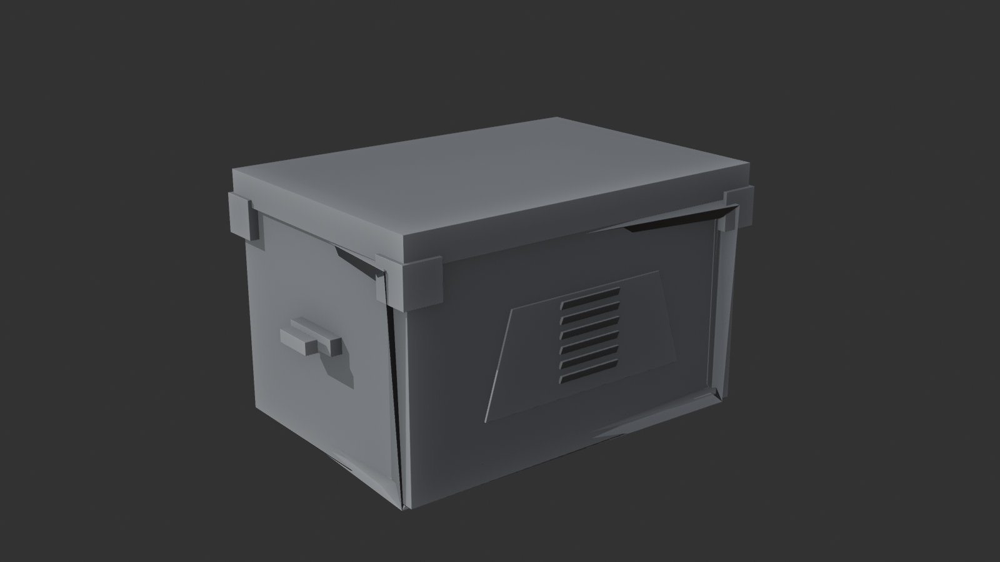
1. Sebelum UV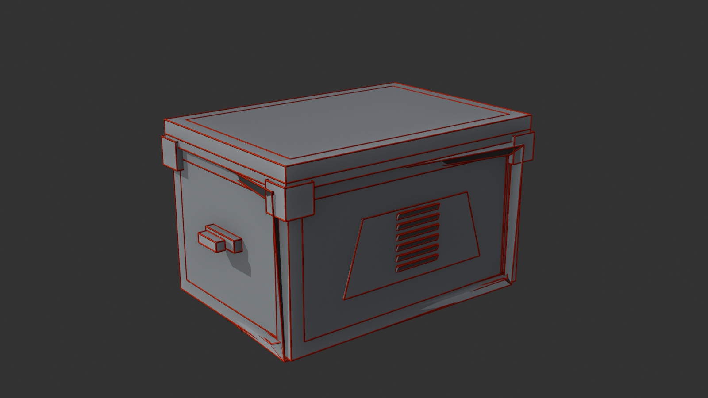
2. Marked Seams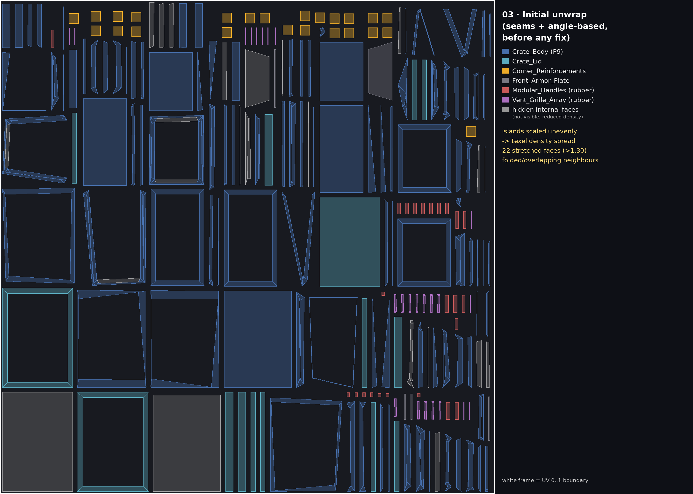
3. Initial Unwrap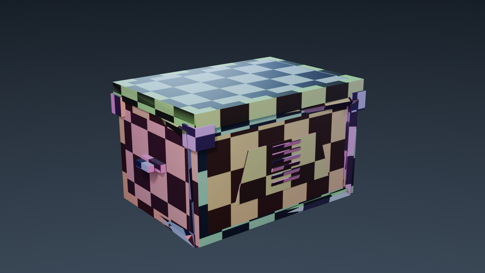
4. Checker Test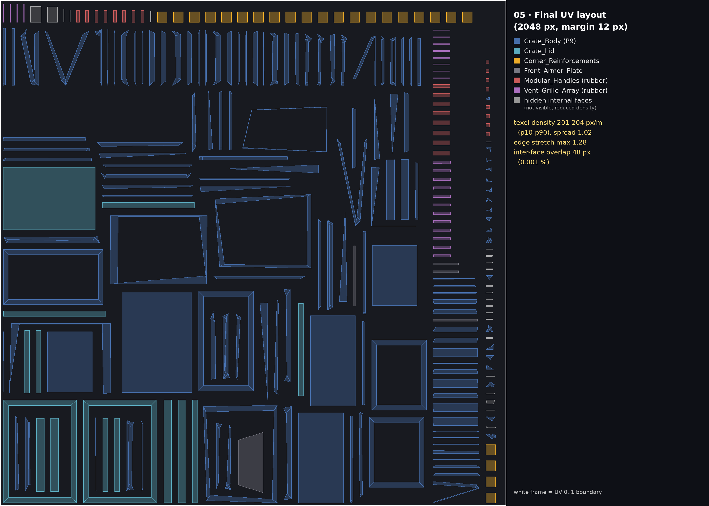
5. UV Layout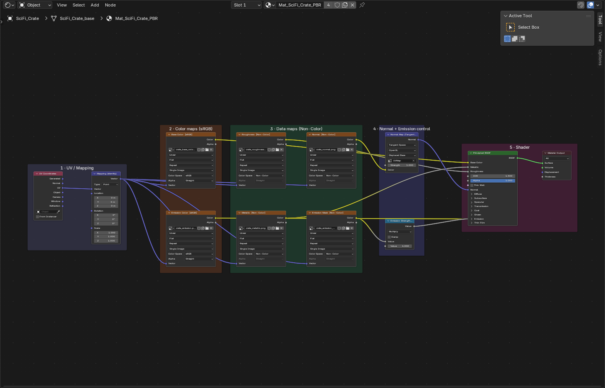
6. Node Graph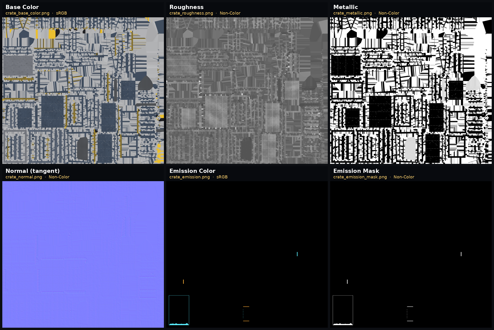
7. Maps Breakdown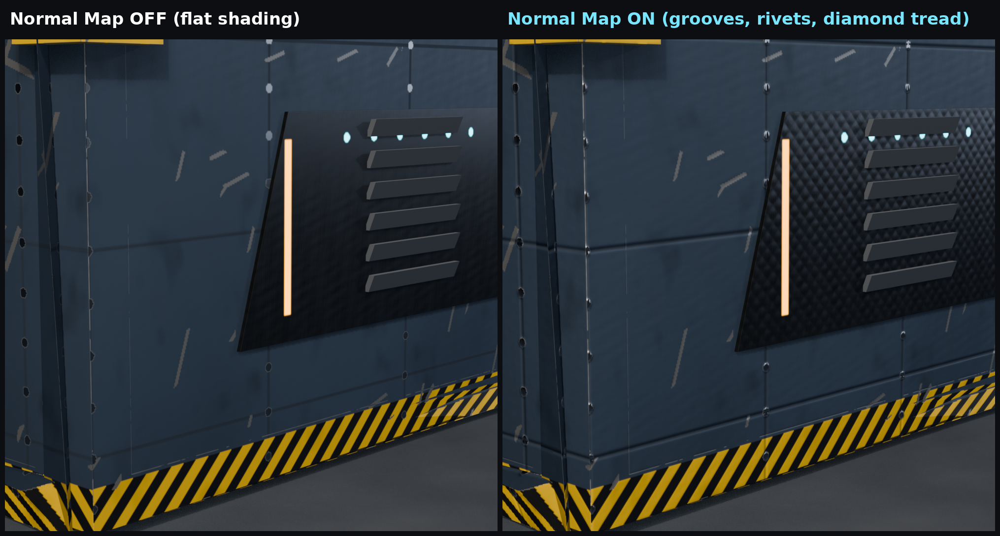
8. Normal Detail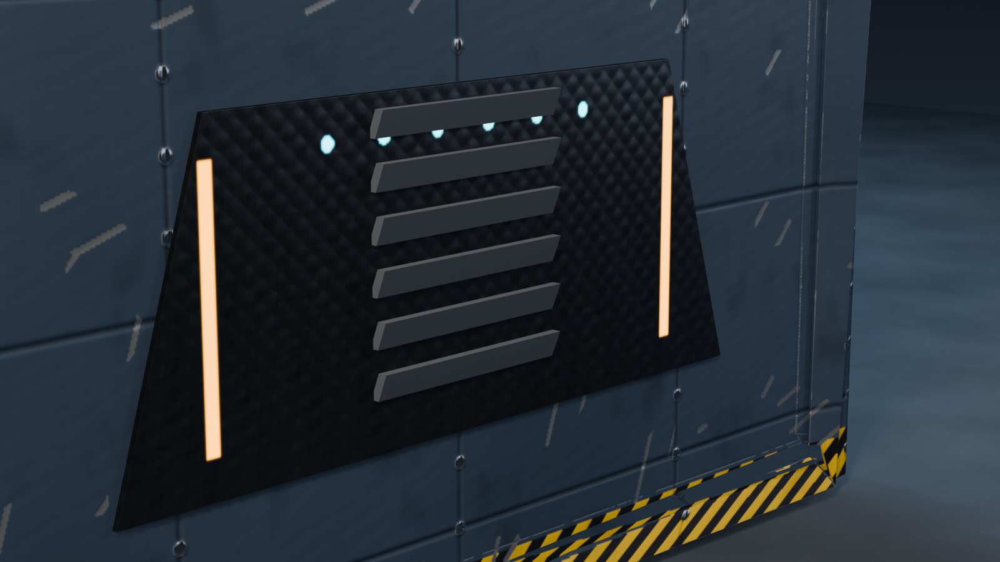
9. Emission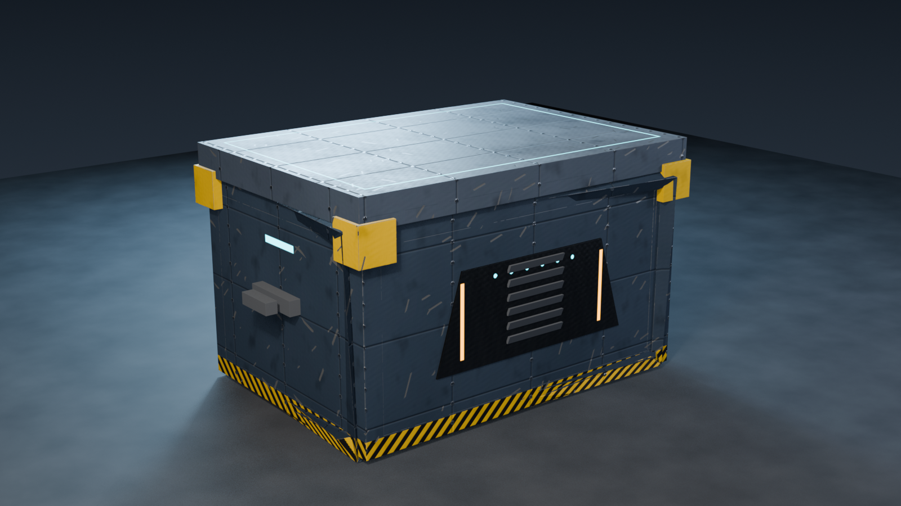
10. Final Crate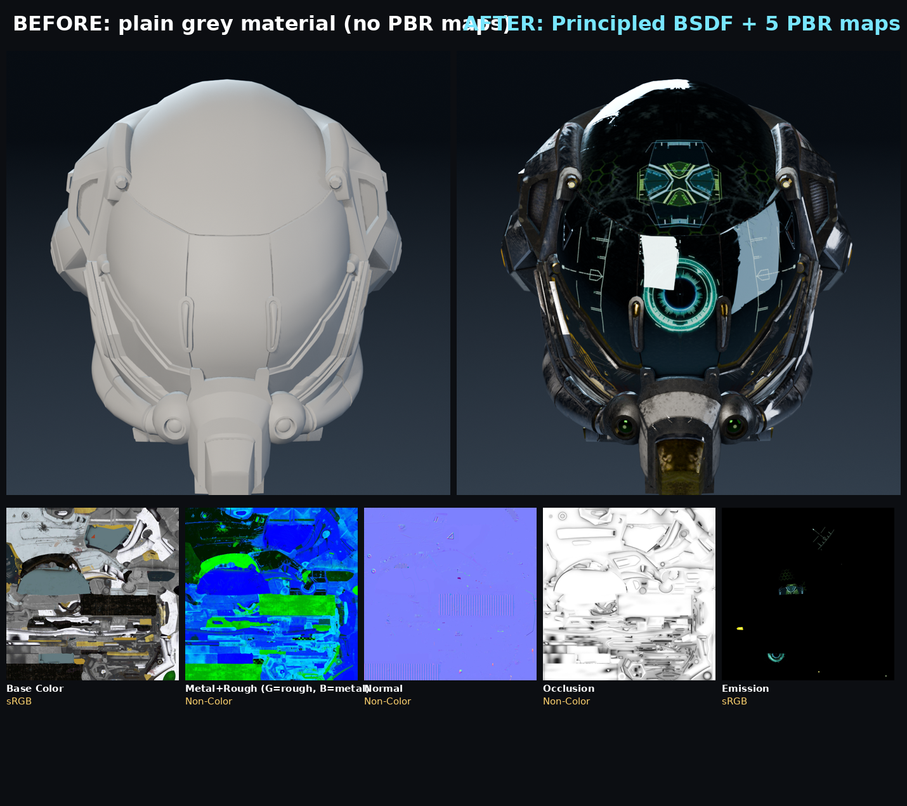
11. Ext. Helmet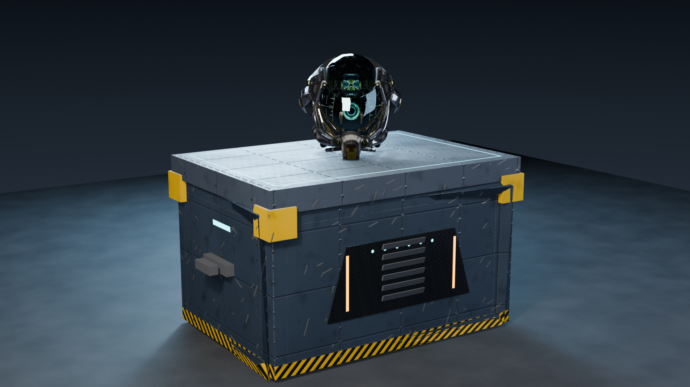
12. Final Scene